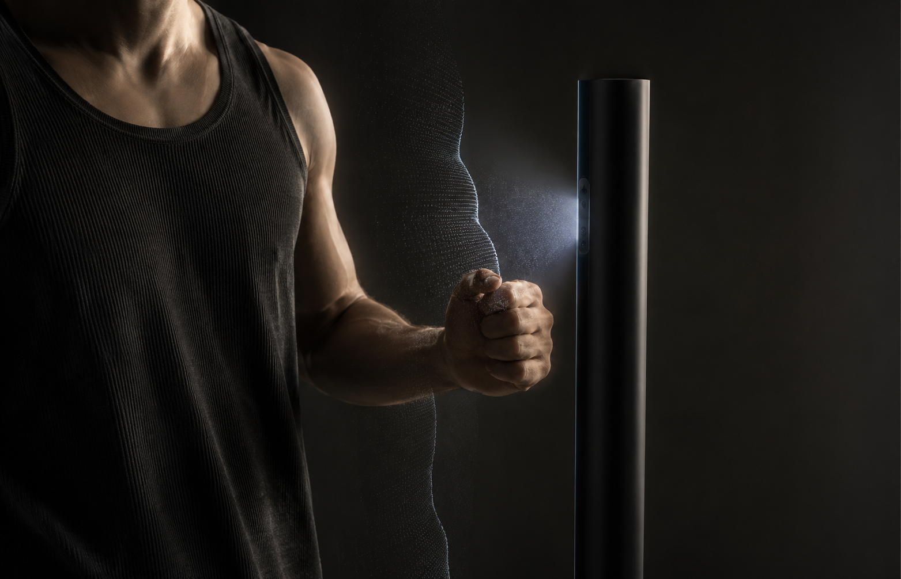
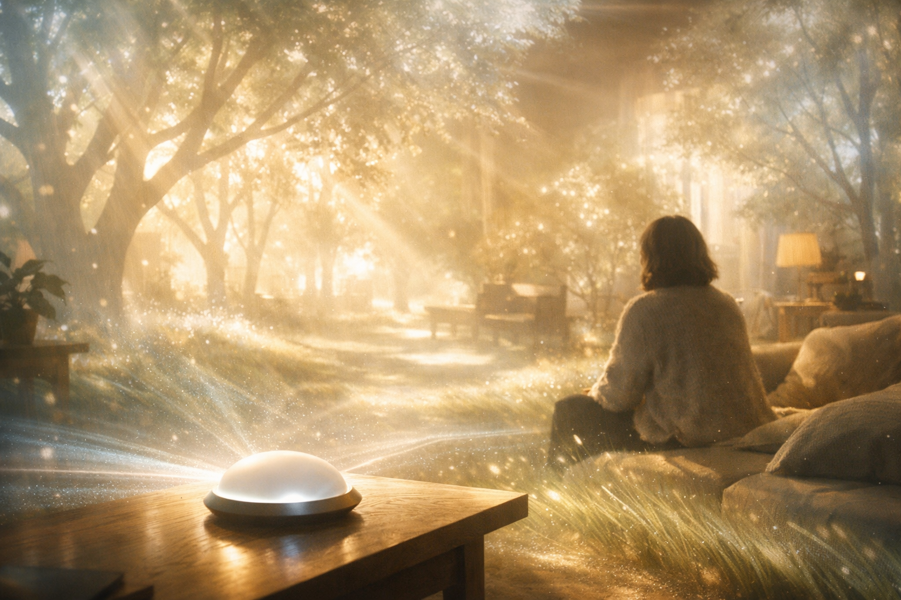

Morphable Mannequin
Beyond Mass Production
A radical prototype is an experimental system built to challenge fundamental assumptions about how products, materials, and experiences are created.
A radical prototype is an experimental system built to challenge fundamental assumptions about how products, materials, and experiences are created.
reimagining in-store shopping with bespoke apparel created through an interactive technology experience
people are scanned as they enter the store
a morphable mannequin replicates their body form, then spray-on fabric is applied to create a custom garment

WALK-IN BODY SCAN
instant production
Beyond Mass Production
 Inventions InProgress
Inventions InProgress
Beyond Traditional Buildings

Inventions InProgressBeyond Photos & Videos
radical_prototypes operates between New York and Pune.

Leads technology development, intellectual property, and system execution from New York City, driving the translation of research and emerging technologies into deployable products and ventures.

Based in India, oversees operations, financial planning, and strategic growth, ensuring the efficient execution and long-term sustainability of the organization.
Interested in our research, technologies, or their potential applications? Whether you're exploring future possibilities or seeking collaboration opportunities, we'd love to hear from you.
Contact: rajvi@radicalprototypes.com